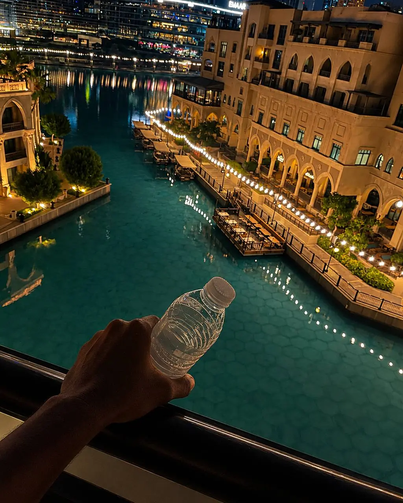

LOCAL DISCOVERIES ? CULTURE ? EXPLORATION
Beyond the skyscrapers and luxury malls lies another side of Dubai filled with culture, creativity, history and unique local experiences.
Most visitors know Dubai for Burj Khalifa, Palm Jumeirah and Dubai Mall. However, the city also offers hidden districts, artistic communities, local eateries and unexpected places that reveal a different side of the Emirates.
One of Dubai's oldest neighborhoods, Al Fahidi preserves traditional architecture, museums, courtyards and cultural spaces that tell the story of old Dubai.
Located in Al Quoz, Alserkal Avenue has become the center of Dubai's independent art scene. Visitors can explore galleries, creative studios, exhibitions and specialty cafes.
Situated in the desert, Love Lake offers a peaceful escape from the city. The heart-shaped lakes have become popular for photography, walking and sunset views.
Many visitors are surprised to discover flamingos and protected wetlands located just minutes from Downtown Dubai.
The sanctuary provides a unique contrast to the city's urban skyline.
Traditional abra boats, spice markets and historic trading routes can still be experienced around Dubai Creek, offering a glimpse into the city's commercial origins.
Several lesser-known locations provide spectacular views without the crowds.
? Love Lake
? Al Qudra Desert
? Dubai Creek Harbour
? Jumeirah fishing harbor areas
Dubai's growing cafe culture includes many hidden coffee shops and creative spaces that attract entrepreneurs, artists and remote workers.
Many of these venues can be found in Al Quoz, Jumeirah and Downtown Dubai.
Away from the major tourist areas, visitors can find quieter stretches of coastline perfect for relaxation and photography.
Exploring beyond the major attractions allows visitors to experience Dubai's culture, creativity and local character while discovering places often overlooked by guidebooks.
Dubai rewards curiosity. While its famous landmarks deserve attention, some of the city's most memorable experiences can be found in quiet cultural districts, hidden viewpoints, local cafes and historic neighborhoods that reveal a deeper side of the city.